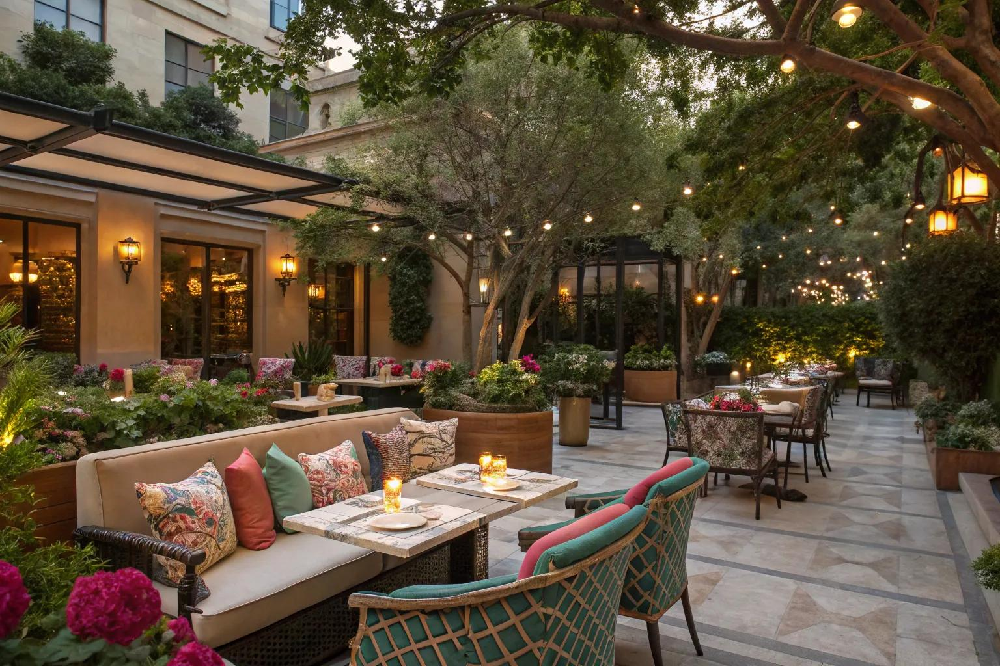

Naša zgodba
Sultanova Kuhinja je nastala iz ljubezni do turške kulinarike in želje, da bi gostom približali pristne okuse Anatolije. Navdih za naše jedi črpamo iz družinskih receptov, ki se prenašajo iz roda v rod, ter iz bogate tradicije turške gostoljubnosti.
Vsak dan skrbno izbiramo sveže sestavine, meso pečemo na žaru, jedi pa začinjamo z dišavnicami, ki ustvarijo značilen okus. Želimo, da se pri nas počutite dobrodošli — kot gostje za domačo mizo. Ob dobri hrani radi ustvarjamo prostor za druženje, pogovor in odkrivanje novih okusov.

Delovni čas
- Ponedeljek: zaprto
- Torek: 11.00–22.00
- Sreda: 11.00–22.00
- Četrtek: 11.00–22.00
- Petek: 11.00–23.00
- Sobota: 12.00–23.00
- Nedelja: 12.00–21.00
Lokacija
Sultanova KuhinjaLimbuška cesta 36a
2000 Maribor
View Larger Map